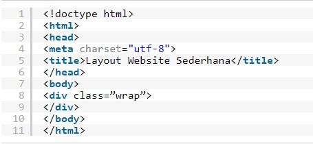
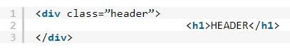
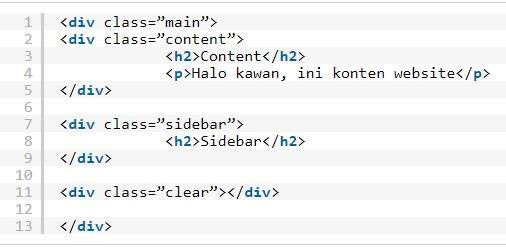
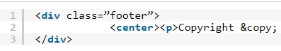

Halo kawan, apa kabar? Semoga hari ini kawan pembaca tetap semangat untuk mencari ilmu. Nah, pada kesempatan ini saya akan membahas tentang membuat layout website sederhana dengan HTML dan CSS.
Untuk membuat website kita harus memiliki pemikiran tentang bagaimana layout dari sebuah website tersebut. Maka dari itu tutorial ini sangatlah penting bagi kawan pembaca yang baru mengenal HTML dan CSS. Mau tahu bagaimana cara membuat layout sederhana website? Simak langkah-langkah selanjutnya.
Dalam tahapan pembuatan kerangka dasar digunakan bahasa pemrograman HTML. Di dalam kerangka ini kita akan buat kerangka dari header, content, sidebar dan
footer yang merupakan layout dasar pembuatan website. Silahkan ikuti code dibawah ini dan simpan file dengan nama index.html.

Code diatas merupakan code dasar dari halaman web yang menggunakan HTML. Apabila kamu buka di web browser, maka akan muncul halaman kosong.
Oke, kita lanjut dengan membuat bagian header. Bagian ini terletak di bagian atas halaman website yang berisi judul atau konten lainnya. Silahkan ikuti code berikut ini dan letakkan setelah bagian wrap.
Setelah header, kini kita membuat bagian konten dan sidebar. Kedua bagian ini letaknya sejajar namun berbeda ukuran. Konten terletak di kiri dengan ukuran kurang lebih 66% dari ukuran penuhnya. Sedangkan sidebar akan kita buat di sebelah kanan dengan ukuran 26%. Ikuti code berikut ini dan letakkan dibawah code bagian header yang telah kita buat.
Bagian kerangka terakhir adalah footer. Footer sesuai namanya terletak di bagian paling bawah website. Biasanya berisi informasi berupa credit, menu atau komponen lainnya. Ikuti code berikut dan letakkan dibawah clearfix.
Oke kawan, tahapan membuat kerangka sudah usai.